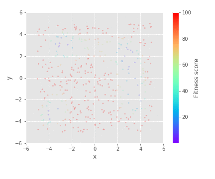

Speciation¶
Sometimes your search space may have multiple optimums. This can be tricky for the genetic algorithm as it may find a local optimum rather than the global optimum, and its performance will be dependant on the initial conditions. Speciation can be used to explore multiple optimas simultaneously. In speciation, individuals reproduce with individuals close to them in the search space. Over time, this should lead to distinct populations that explore each of the optimas.
gaga offers a very crude implementation of speciation. A the \(i^{th}\) generation, the individuals in the gene pool are sorted by the \(i%n^{th}\) gene where the are \(n\) genes.
Himmelblau's function¶

Speciation is demonstrated on the Himmelbalu function.
This function has four equal minima. These minima are located at:
import gaga as ga
genes = {'x':(-5, 5),
'y':(-5, 5)}
def evaluate(individual):
x = individual.genes['x']
y = individual.genes['y']
individual.fitness_score = pow(pow(x, 2) + y - 11, 2) + pow(x + pow(y, 2) - 7, 2)
sim = ga.ga(genes,
evaluate,
population_size = 400,
epoch = 50,
mutate_crossover = True,
speciate = True,
mutate = 0.6,
winrate = 1,
sigma = 0.5)
sim.run_simulation(seed = seed)
In the example below, where there is an x and a y gene, the individuals alternate reproducing with an individual close to them in x and in y.
speciate = False¶
|  | |||
|
|
|
|
speciate = True¶
|
|
|
|
The genetic algorithm is able to explore multiple optimums by itself, speciate just improves this.
Note
It can be tricky to get the hyperparameters right so that all of the optimums are explored. In general, you also need a larger population so that each subpopulation is large enough, which can be computationally expensive. It may be easier just to tune your genetic algorithm to find local optimums, then run it a number of times with different initial conditions i.e. change the seed).